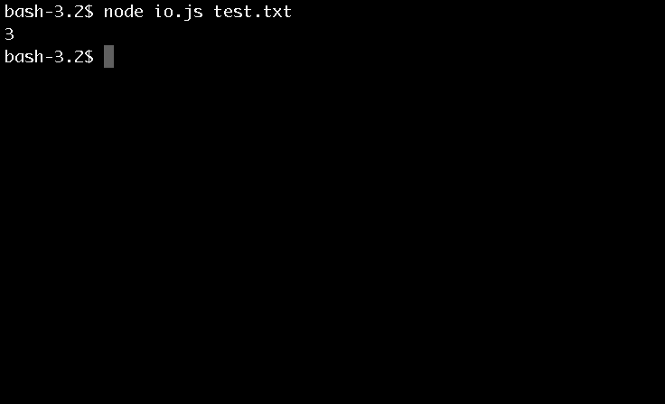

Background on what's happening here
We are working with synchronous file systems otherwise known as blocking file systems. This means it reads in all the data before proceeding onto something else and that it will block other inputs until its done. Here is the specific function you need to use:
var file = fs.readFileSync(process.argv[2]);Reading In A File
Down to business
1) You need to create a simple text file called
test.txtline1;
line2;
line3; 2) Now it's time to create a JavaScript file called "io.js" and code it so that it reads in another file and returns the number of strings. The first important piece of information we need to know is: Since we are using a file-system global module we will use
var fs = require('fs');3) To process that file we will use the Node.js function we talked about earlier of:
var file = fs.readFileSync(process.argv[2]);Remember from Passing Arguments that the data you need is stored in argv[2]. Meaning the file we want to access is in the location argv[2].
4) Now some generic JavaScript to get the job done.
var contents = file.toString().split('\n').length - 1;
console.log(contents);5) At this point we need to call the file. Can you remember how do that?
node io.js test.txt;
Onto what makes Node.js so Special: Asynchronous I/O
Finally it's time to unleash the power of Node.js Click Here